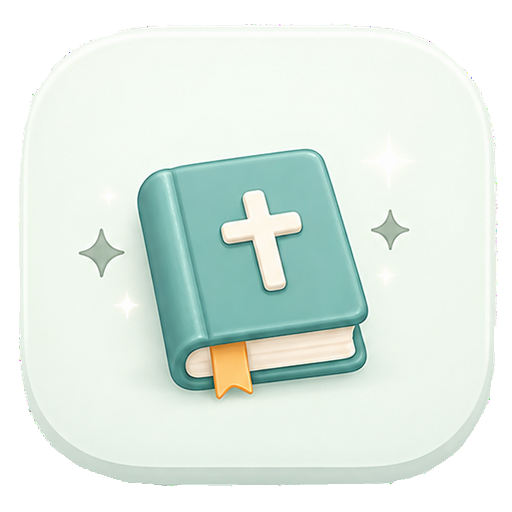

🌿 묵상
📖 관련 말씀

말씀을 한 글자 한 글자 마음에 새기는 시간
오늘의 감사와 기도
신약 → 구약 순서로 선택하세요.
현재 앱에 등록된 모든 번역본입니다.
예: 창 → 창세기
현재 선택한 구절을 번역본별로 비교합니다.
선택한 말씀
단어를 입력하면 성경 전체에서 해당 단어가 나오는 구절을 찾아드려요.
찬송가 제목이나 장 번호를 입력해서 찾아보세요.
찬송가 300곡
지금 나의 마음과 상황에 필요한 주제를 선택해보세요.
이 분이 맞으신가요?
처음 오셨네요!
책마다 멈춘 위치가 기억돼요. 눌러서 이어서 쓰세요.
완료 진행중 시작 전
전체 구절 수 31,102절 기준
묵상을 남긴 구절 목록이에요. 눌러서 다시 보세요.
글씨 크기와 글씨체를 원하는 대로 바꿀 수 있어요.
태초에 하나님이 천지를 창조하셨다.
📖 성경 주석
구절을 선택하면 주석을 볼 수 있어요.